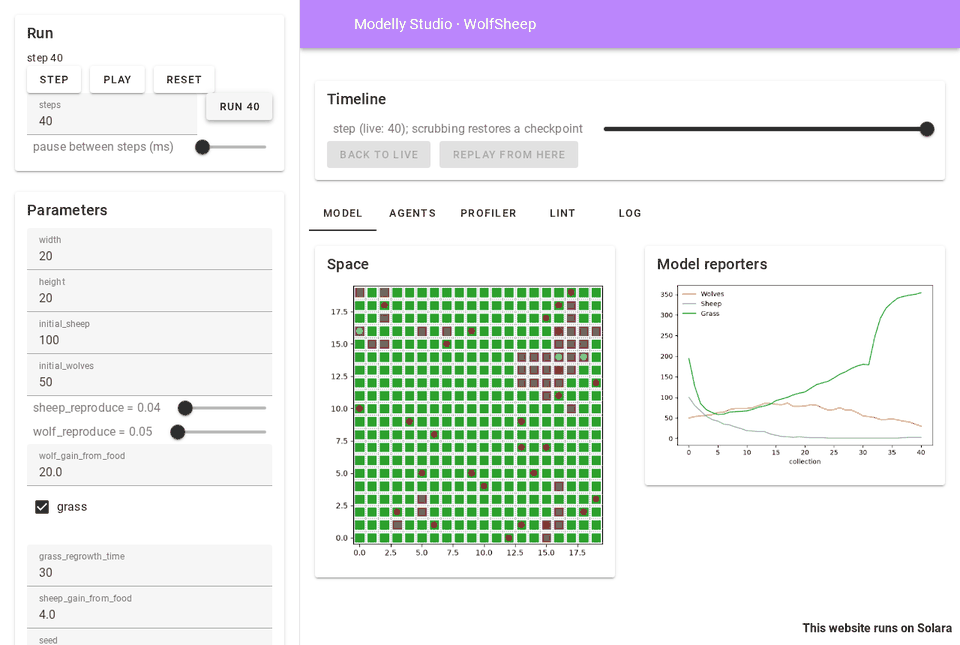
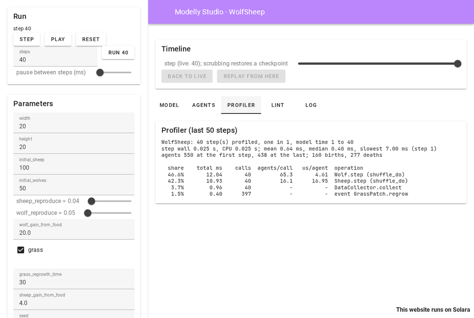
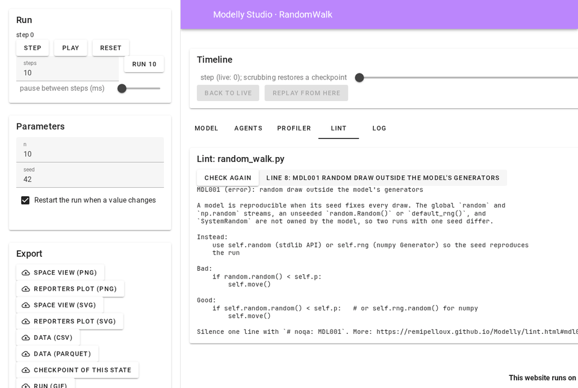
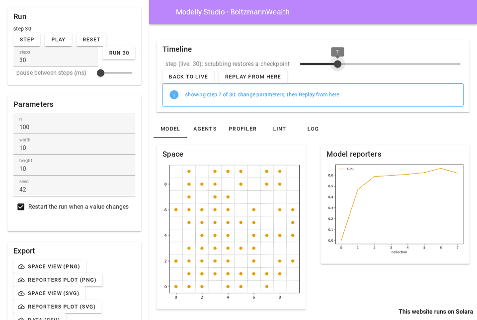

Modelly Studio#
Modelly Studio is a browser app for one model: run it, change its parameters, scrub back
through the run, and see the space, the plots, the agents, the profiler and the linter side by
side. It works with any Modelly model, with no code to write: the parameter panel comes from the
model’s Scenario, the space view from the same drawing code SolaraViz uses.
pip install "modelly-abm[viz]"
modelly studio path/to/model.py:MyModel
The command serves the app on http://127.0.0.1:8765 and opens it in the default browser, on
Windows, macOS and Linux alike. Stop it with Ctrl+C.

Starting Studio#
modelly studio modelly/examples/advanced/wolf_sheep/model.py:WolfSheep
modelly studio modelly.examples.advanced.wolf_sheep.model:WolfSheep --seed 7
modelly studio model.py:Epidemic --port 8800 --no-browser
modelly studio model.py:Epidemic --portrayal app.py:agent_portrayal
python -m modelly.studio model.py:Epidemic # the same, without the umbrella command
The target is a file and a class, or a dotted module and a class, as for
modelly profile. A file inside a package (folders with __init__.py) is
imported under its package name, so checkpoints of the model load again later; a loose file is
imported under its own name with its folder on sys.path, so from agents import Sheep next
to it works.
Option |
Meaning |
|---|---|
|
port to serve on (default 8765); |
|
address to listen on (default |
|
do not open the default browser |
|
seed of the first run (default 42) |
|
how agents are drawn: a function returning an |
|
steps between two timeline checkpoints (default 1) |
|
how many of the last steps the profiler panel sums (default 50) |
|
mebibytes the timeline’s checkpoints may take (default 256) |
|
an experiment’s results store, for the Experiments tab |
|
observations to assimilate, for the Assimilation tab |
|
posteriors and sensitivity results, for the Analysis tab |
Exit status: 0 when the server stopped normally, 1 when the model raised while being built, 2 for a bad command line or a target that cannot be found. The model is built once before the server starts, so these errors show in the terminal.
The bundled examples’ app.py files define portrayals Studio can reuse, for example
--portrayal modelly/examples/advanced/wolf_sheep/app.py:wolf_sheep_portrayal. Without one,
each agent class gets its own colour from the colour-blind-safe Okabe-Ito palette.
The panels#
Run (sidebar): Step, Run N steps, Play and Pause, Reset, and the pause between two steps while playing. Play waits for each step to be drawn before taking the next one. An exception raised by the model stops the run and shows under the buttons; the traceback is in the log.
Parameters (sidebar): one input per field of the model’s Scenario, and per keyword
argument with a default of its constructor:
Field |
Input |
|---|---|
|
checkbox |
|
select |
|
slider |
other |
number field |
|
text field |
anything else (tuple, dict, None) |
shown, not editable |
and the seed. With “Restart the run when a value changes” (on by default) a change rebuilds the model at step 0; turn it off to keep the change for Reset, or for Replay from here.
Timeline: a slider over every step of the run so far. Moving it shows the model at that step in every view, the live run going on untouched; Back to live returns to the latest step.
Model: the space (orthogonal and hexagonal grids, networks, continuous space and Voronoi
grids, drawn by SpaceRenderer) and a plot of the DataCollector’s numeric model reporters.
A model without a space or a collector says so instead. Above 10 000 agents and network
edges, redrawing with Matplotlib at every step would stall the page, so the space view points
to the Map tab instead.
Map: the space drawn by WebGL in the browser, for models with 100 000 agents or edges and more (see the map).
Agents: the first 100 agents by unique_id, one column per attribute (the values
modelly.timetravel.agent_state reads: plain attributes, columns and the cell or position),
filtered by class.
Profiler: modelly profile over the last 50 steps: the costliest operations,
microseconds per agent and the hints. Every step Studio takes is profiled; one session profiles
at a time, since the profiler patches classes for the whole process.

Lint: modelly lint on the model’s file. Each finding is a button; clicking it
shows the rule’s --explain text. Check again re-reads the file after you edit it.

Log: what happened in the run: new runs and their values, replays, errors, and why a model could not be checkpointed.
Ensemble, Assimilation, Experiments and Analysis: replicates and filters, a results store, posteriors and sensitivity results, in the sections below.
Export (sidebar): the space view and the reporters plot as PNG or SVG, the collected model
data as CSV (and Parquet when pyarrow is installed), a checkpoint of the state shown (load it
with Model.load), and a GIF of the run’s space view (at most 120 frames, sampled evenly).
For the live run, two files that let someone else get the same run: the session as a Python
script (below) and a modelly bundle zip.
Scrubbing and replaying#

Studio records each run with a modelly.timetravel.Recorder, one checkpoint
per step by default (--every). Scrubbing restores the checkpoint at or before the step and
replays on to it, so the state shown is the one the run had at that step, bit for bit.
To try another future from a step: scrub to it, change parameters (with “Restart the run” off),
and click Replay from here. The scrubbed-to state becomes the live run, with the changed
Scenario values set on its scenario and, when the seed changed, both generators reseeded. What
the time travel guide says holds: code that
reads self.scenario.<name> sees the new value from the next step on, but values the model
copied out of the scenario when it was built keep their old ones, and constructor arguments
(not on the scenario) are not applied, which the log says.
Models that cannot be checkpointed#
A model that holds a lambda (a DataCollector reporter, say), a generator or a class made at
run time cannot be pickled, so it cannot be checkpointed. Studio then replays instead: scrubbing
rebuilds the run from its start with the same parameters and seed and runs it on to the step.
Seeded runs are reproducible, so the state is the same; it only takes longer on long runs. The
log names what could not be saved, and the timeline says “scrubbing replays the run”. Of the
bundled examples, Epstein civil violence, the prisoner’s dilemma grid, Sugarscape, the tram
model and alliance formation replay; the others restore checkpoints. Making their reporters
module-level functions (see checkpoints) makes scrubbing instant.
Recording a session as a script#
Export → Session script downloads a Python file that rebuilds the live run: it builds the model with the values and seed of the last Reset (or of the first run), takes the steps the run took, and, for each Replay from here, applies the changed Scenario values and the new seed at the step the replay started from. Running it ends with the model in the state Studio showed, bit for bit:
python wolfsheep_session_step40.py # "WolfSheep at step 40"
from wolfsheep_session_step40 import replay
model = replay() # the live run's model, to inspect or run on
What the script holds, and what it does not:
Scrubbing alone does not change the live run, so it is not in the script. A replay cuts the run at the step it starts from: the steps that had been taken after it are not replayed.
The script loads the model the way Studio did, from the same target (a file path or a dotted module), so it runs wherever that target resolves: next to the model, or with the package installed.
A parameter that is a constructor argument rather than a Scenario field is applied by Reset, not by Replay from here (see above); the script does the same.
Steps are counted from the model’s time, which each step advances by one.
The test suite checks the guarantee on six bundled examples, checkpointed and replayed ones alike: after a new run, steps, a scrub back, a replay with a changed seed and more steps, the script’s model has the same time, agents and attributes, generator states, collected data and scenario as Studio’s live model.
Bundles#
Export → Bundle reruns the live run with modelly run’s recorder (the
same target, values, seed and step count) and packs it as a modelly bundle zip: the manifest,
the outputs, the model’s code, the seeds, the lock file and the Zenodo metadata. modelly verify manifest.json on the unpacked zip reruns it and compares the outputs. A manifest
records one run built from its parameters and stepped on, so after Replay from here the
bundle is refused (the log says why) and the session script is the file to share.
Ensembles and data assimilation#
Ensemble runs new replicates of the parameter panel’s values, each with a seed spawned
from the panel’s seed (as Scenario.spawn_replications hands them out), and draws the mean,
the median and the 5 to 95 % band of every numeric model reporter across them, step by
step. The bands are the long-format frame of
modelly.stream.Ensemble.band (time, quantity, mean, q0.05,
q0.5, q0.95), and download as CSV. The replicates are stepped in place, so models that
cannot be checkpointed work too.
Assimilation needs observations: --observations observed.csv, a CSV file with a time
column and one column per observed model reporter (an empty field is a quantity not observed
at that time). Choose a filter and run it over every observation:
the particle filter weights the replicates by how well they match each observation and resamples them when the effective sample size falls below the threshold. The dashboard shows the filtered bands with the observations on top, the effective sample size over time (dots where it resampled) and every replicate’s weight at every observation, read before resampling, as a heat map;
the ensemble Kalman filter adjusts model attributes (the live model’s float attributes are offered), each starting uniform within the chosen spread of its live value. The dashboard shows the bands and each parameter’s ensemble mean and standard deviation over time.
Both run synchronously when the button is pressed: keep the ensemble small (the default is 20 replicates) on slow models. The assimilation guide explains the filters; resampling copies replicates through checkpoints, so the particle filter needs a model that can be checkpointed.
Experiments#
--results runs/epidemic opens an experiment’s results store in the
Experiments tab: one row per finished run, with its parameters and its outputs at its last
step. Each parameter gets a filter (a range slider for numbers with many values, a multiple
select otherwise); the tab plots the chosen output against the chosen parameter (every run,
and the mean per value) and the selected runs step by step, and downloads the selection as
CSV. From Python the same queries are modelly.studio.browser.ExperimentBrowser.
Calibration and sensitivity#
--analysis analysis.py:results names a function that returns what the Analysis tab shows: a
calibration Posterior, a sensitivity result (Morris,
Sobol, PAWN, one at a time), or a list or a dict of them (the keys name them). For a
posterior the tab draws its marginals, pairs and fits (Posterior.plot) and its summary with
highest-density intervals; for a sensitivity result, the method’s plot and the ranked table.
# analysis.py
from modelly.sensitivity import morris
from model import Epidemic
from study import calibration, space # your own calibration and ScenarioSpace
def results():
return {"fit": calibration.run(), "screen": morris(Epidemic, space, "infected")}
The function runs once, when the tab first opens. From Python, append (name, result) to
session.analyses before showing StudioApp(session).
The map: large models in WebGL#
The Map tab draws the shown model’s space in the browser with WebGL: agents as points, a
network’s nodes and edges, a GeoSpace’s region outlines. Drag to pan,
scroll to zoom, double-click to fit. Each step sends the scene as flat binary arrays and the
GPU draws it, so a model with 100 000 agents or a network with 100 000 edges stays
interactive where Matplotlib would take seconds per frame. Agents take their portrayal’s
colour up to 20 000 agents, their class’s colour above that.
It degrades step by step: without WebGL (an old GPU driver, a locked-down browser) the same
scene is drawn with Canvas 2D, slower; the “Canvas 2D instead of WebGL” checkbox forces that;
and the Model tab keeps the Matplotlib view with the portrayal’s full styling. The renderer is
a few hundred lines of JavaScript shipped inside Modelly (modelly/studio/map.vue); it loads
nothing from a CDN.
Browsers#
Studio’s browser checks run locally before a release, headless with Playwright on Linux, in Chromium, Firefox and WebKit (the engine of Safari): the page loads with no file from outside the computer, the run controls work, and the map draws 100 000 agents and a 100 000-edge network in WebGL, then the 100 000 agents in Canvas 2D. Microsoft Edge is built on Chromium, so the Chromium run covers its engine; Safari itself (macOS) is not run. The suite is opt-in, one browser at a time, so the normal test run stays fast:
MODELLY_BROWSER=chromium pytest tests/studio/test_studio_browsers.py
MODELLY_BROWSER=firefox pytest tests/studio/test_studio_browsers.py
MODELLY_BROWSER=webkit pytest tests/studio/test_studio_browsers.py
Playwright’s WebKit for Linux is an Ubuntu build: on another distribution it may miss a few
shared libraries (ICU 74, libxml2, flite, libjxl 0.8). MODELLY_BROWSER_EXECUTABLE points the
suite at a browser binary of your own, such as a copy of Playwright’s MiniBrowser wrapper
whose LD_LIBRARY_PATH adds a folder holding those libraries.
Platforms and network#
Studio is a Solara app served by uvicorn on your computer and drawn in your browser: there is
nothing OS-specific in it, and paths are handled with pathlib. By default it listens on
127.0.0.1 only, so nothing outside your computer can reach it; --host 0.0.0.0 shares it on
your network, with no authentication, so use that on a network you trust only.
Studio’s own code makes no network request, and Solara’s telemetry is turned off. The browser
asks only the Studio server for files. Solara’s page needs about 10 MB of front-end files
(its Vuetify app, RequireJS, Font Awesome and their fonts), which the server takes from a
cache folder (share/solara/cdn in the environment): a file not cached yet is downloaded
from cdn.jsdelivr.net the first time the page asks for it, and modelly studio says so when
it starts. To run offline, fill the cache once while online:
python -m modelly.studio.assets # what is cached, what is missing
python -m modelly.studio.assets --fetch # download the missing files
The cache folder can also be copied to a machine without internet access that has the same
Solara version (SOLARA_ASSETS_PROXY_CACHE_DIR points Solara at another folder). The
solara-assets package that used to ship these files lags behind Solara’s releases (1.58
against 1.64 at the time of writing), so Studio does not rely on it. What remains online:
nothing at run time once the cache is filled; the cache itself has to be filled once, per
Solara version.
Architecture#
Studio is a Solara app, decided for 1.3 over a separate front end: it
reuses the visualisation code of modelly.viz (the portrayal styles, SpaceRenderer and its
Matplotlib backend) rather than duplicating it in JavaScript, runs on Windows, macOS and Linux
with nothing to build, and keeps the model in the same Python process as the panels, so the
profiler, the linter and the recorder see the real objects.
Module |
Role |
|---|---|
|
|
|
the checkpoint recorder, or the replay timeline |
|
the parameter panel’s fields, from the |
|
series, agent table, figures and export files |
|
|
|
the session script and the |
|
replicates of the panel’s values and their bands |
|
the particle and ensemble Kalman filters, traced for the dashboard |
|
|
|
posteriors and sensitivity results for the Analysis tab |
|
the bands, filter and experiment figures |
|
the map’s flat arrays: agents, nodes, edges and region outlines |
|
Solara’s front-end files: what the page needs, filling the cache |
|
|
|
|
Each browser tab gets its own session. StudioApp(session) renders headless with
solara.render, which is how the test suite opens every bundled example in Studio.
The screenshots on this page were taken headless, with Playwright driving Chromium against
modelly studio; the video was recorded the same way, by tools/studio/record_tour.py.
The API is in Studio.